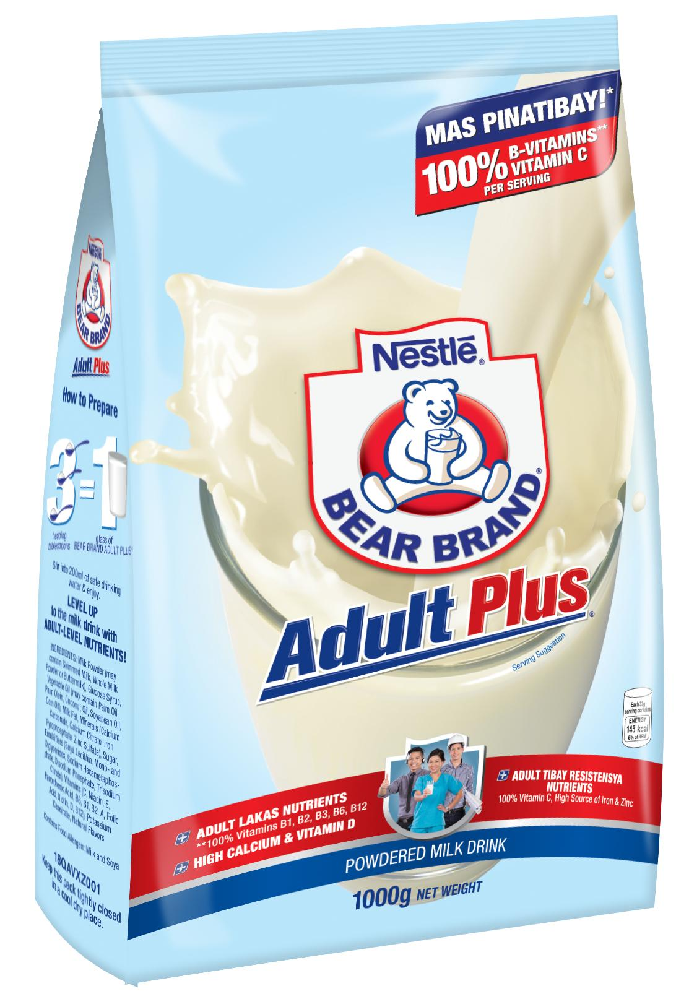
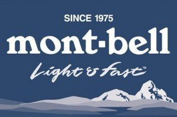
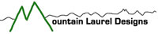

Websites for Hikers and Backpackers
These days the internet is full of backpacking blogs and websites. When coupled with the multitude of online hiking forums, advice is never more than a click or two away. However, not all advice is created equal, and the fact is that more than a few of the folks doling out backcountry wisdom have a relatively limited amount of practical experience out in the field. The list of sites below are ones that I have personally found to helpful over the years. They contain a wide range of information about gear, lightweight backpacking techniques, wilderness skills, health and safety, trip reports and up-to-date news for outdoorsy types. The compilation is by no means exhaustive, and I’m sure there are plenty of other great online backpacking resources of which I am unaware:
- Alan: Trip reports, gear recommendations, hiking guides and how tos. The site’s author, Alan Dixon, was the co-founder of Backpacking Light in 2001.
- Andrew Skurka: Gear reviews, skills tutorials and trip reports from the author of The Ultimate Hiker’s Gear Guide.
- Backpacking Light: Articles, reviews and forum geared towards lightweight and ultra-lightweight backpackers.
- BasecampMD: A good source of information for anyone interested in hiking at high altitudes.
- Besthike: A wide-ranging index of some of the best hikes, treks and tramps from around the world.
- Bushwalk.com: Australian online hiking forum. Good source of information on a multitude of bushwalking options around the country.
- Caltopo: An excellent online mapping and planning tool that has become a go-to site for many folks in the US hiking community.
- Chris Townsend Outdoors: Trip reports, gear reviews and skills articles from the author of The Backpacker’s Handbook.
- Gear Institute: Wide-ranging compilation of outdoor gear reviews (hiking, climbing, cycling, fishing and skiing).
- Gear Junkie: All the latest in gear reviews and news from the outdoor world.
- Hiking in Finland: Gear Reviews and European trip reports from Hendrik Morkel. His long running, The Week in Review, is a compilation of the latest news and articles from around the hiking and backpacking universe.
- International Fuel Names: Translations for the names of fuels commonly used in backpacking stoves in more than sixty countries around the world.
- Mark Verber’s Recommended Outdoor Gear: Gear reviews and general information on light and ultralight backpacking.
- Pmags.com: Across-the-board commentaries on all things hiking and backpacking. Practical, too the point and with a little bit of humour thrown into the mix.
- REI Blog: Tips, stories & gear reports.
- Section Hiker: Gear reviews and how tos. Philip Werner, the site’s author, is one of the most prolific outdoor writers on the web.
- Semi-rad: A humorous and often insightful look at the outdoors lifestyle.
- Summitpost: Logistical information and trip reports for a wide range of hikes around North America.
- The Great Outdoors / TGO Magazine – The online version of the UK’s original outdoor magazine. Trip reports, gear reviews and useful skills section. Also contains up-to-date weather information for British hikes, and all the latest news on what’s happening in the UK outdoors scene.
- Thruhiker.com: Nutritional recommendations for backpackers and other endurance exercise enthusiasts. The site’s author is nutritionist and long distance hiker, Dr. Brenda Braaten.
- Trail Groove: US-based online hiking and backpacking magazine. Trip reports, backpacking recipes, photography, forum and gear reviews.
- Trail Posse: An informative site covering race and equity in the outdoors. Lots of thought-provoking articles.
- Treeline Review: Detailed reviews and rankings of a wide range of lightweight backpacking equipment, as well as other outdoor gear.
- Ultralight Insights: In depth UL gear reviews and commentaries on new technologies. The author is Will Rietveld, who has been reviewing gear for Backpacking Light (see above) since 2004.
- Ultralight Reddit: Useful forum for hikers interested in lightening their pack load. Pack shakedowns, skills articles, youtube tutorials, trip reports and gear lists.
Sponsors


